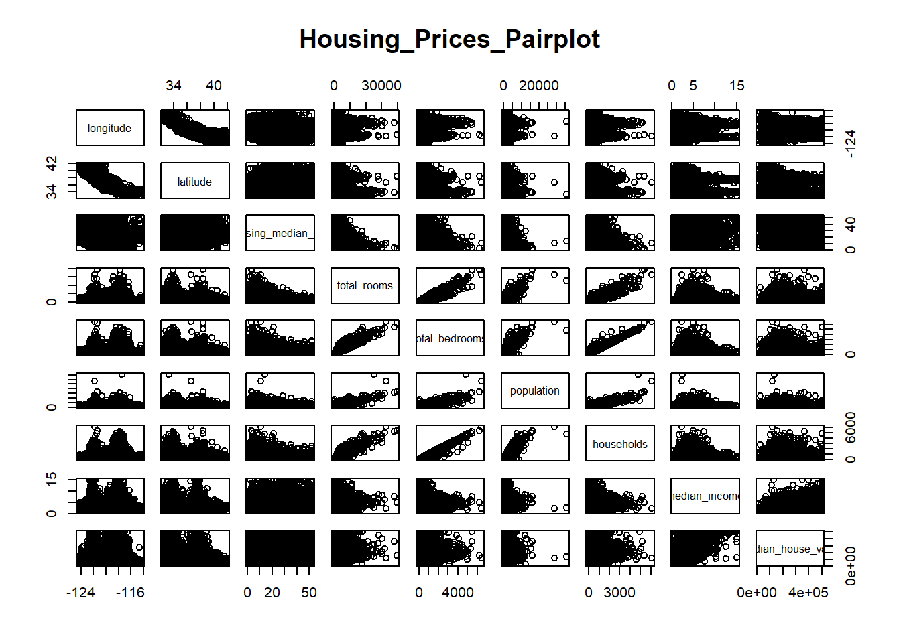

# Set CRAN mirror non-interactively
options(repos = c(CRAN = "https://cloud.r-project.org"))
# Assuming your dataset is in a file named 'california_housing.csv'
install.packages('ggplot2')Installing package into 'C:/Users/racha/AppData/Local/R/win-library/4.2'
(as 'lib' is unspecified)package 'ggplot2' successfully unpacked and MD5 sums checked
The downloaded binary packages are in
C:\Users\racha\AppData\Local\Temp\RtmpCKo7za\downloaded_packagesinstall.packages('caret')Installing package into 'C:/Users/racha/AppData/Local/R/win-library/4.2'
(as 'lib' is unspecified)package 'caret' successfully unpacked and MD5 sums checkedWarning: cannot remove prior installation of package 'caret'Warning in file.copy(savedcopy, lib, recursive = TRUE): problem copying
C:\Users\racha\AppData\Local\R\win-library\4.2\00LOCK\caret\libs\x64\caret.dll
to C:\Users\racha\AppData\Local\R\win-library\4.2\caret\libs\x64\caret.dll:
Permission deniedWarning: restored 'caret'
The downloaded binary packages are in
C:\Users\racha\AppData\Local\Temp\RtmpCKo7za\downloaded_packagesinstall.packages('lattice')Installing package into 'C:/Users/racha/AppData/Local/R/win-library/4.2'
(as 'lib' is unspecified)package 'lattice' successfully unpacked and MD5 sums checked
The downloaded binary packages are in
C:\Users\racha\AppData\Local\Temp\RtmpCKo7za\downloaded_packageslibrary(lattice)Warning: package 'lattice' was built under R version 4.2.3library(ggplot2)Warning: package 'ggplot2' was built under R version 4.2.3library(caret)# Load data and display the first 5 rowsWarning: package 'caret' was built under R version 4.2.3# Define the URL for the California housing dataset
california_housing_url <- "https://raw.githubusercontent.com/ageron/handson-ml2/master/datasets/housing/housing.csv"
# Download the dataset
download.file(california_housing_url, destfile = "housing.csv", method = "auto", mode = "wb")
housing_data <- read.csv("housing.csv")
head(housing_data) longitude latitude housing_median_age total_rooms total_bedrooms population
1 -122.23 37.88 41 880 129 322
2 -122.22 37.86 21 7099 1106 2401
3 -122.24 37.85 52 1467 190 496
4 -122.25 37.85 52 1274 235 558
5 -122.25 37.85 52 1627 280 565
6 -122.25 37.85 52 919 213 413
households median_income median_house_value ocean_proximity
1 126 8.3252 452600 NEAR BAY
2 1138 8.3014 358500 NEAR BAY
3 177 7.2574 352100 NEAR BAY
4 219 5.6431 341300 NEAR BAY
5 259 3.8462 342200 NEAR BAY
6 193 4.0368 269700 NEAR BAY# Create a pairplot to visualize numeric data
numeric_vars <- sapply(housing_data, is.numeric)
pairs(housing_data[, numeric_vars], main = "Housing_Prices_Pairplot")
# Split into features and label
population_feature <- housing_data[, "population"]
total_rooms_label <- housing_data[, "total_rooms"]
# Split into training and testing data
set.seed(0)
split_indices <- createDataPartition(total_rooms_label, p = 0.7, list = FALSE)
population_train <- population_feature[split_indices]
population_test <- population_feature[-split_indices]
rooms_train <- total_rooms_label[split_indices]
rooms_test <- total_rooms_label[-split_indices]
# Build linear regression model
linear_model <- lm(rooms_train ~ population_train)
# Print the accuracy score
accuracy <- summary(linear_model)$r.squared * 100
cat("Accuracy_Score:", accuracy, "\n")Accuracy_Score: 72.3814 # Plot the regression line
plot(population_feature, total_rooms_label, main = "Linear_Regression", xlab = "Population", ylab = "Total_Rooms")
abline(linear_model, col = "red")
# Remove NaN values
cleaned_data <- na.omit(housing_data)
# Select features and label
features_multi <- cleaned_data[, !(names(cleaned_data) %in% c("median_house_value", "ocean_proximity"))]
label_multi <- cleaned_data[, "median_house_value"]
# Split into training and testing data
set.seed(0)
split_indices_multi <- createDataPartition(label_multi, p = 0.7, list = FALSE)
features_multi_train <- features_multi[split_indices_multi, ]
features_multi_test <- features_multi[-split_indices_multi, ]
label_multi_train <- label_multi[split_indices_multi]
label_multi_test <- label_multi[-split_indices_multi]
# Build multi-variable linear regression model
linear_model_multi <- lm(label_multi_train ~ ., data = features_multi_train)
# Print the accuracy score for the multi-variable model
accuracy_multi <- summary(linear_model_multi)$r.squared * 100
cat("Accuracy_Score_Multi_variable:", accuracy_multi, "\n")Accuracy_Score_Multi_variable: 63.85789